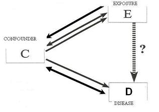
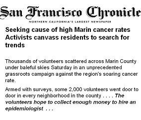

Confounding Bias
Lead Author(s): Jeff Martin, MD
Properties of a True Confounder
Is the exposure (or predictor variable), marked E, associated with disease (or outcome), D? (See diagram)
- Is confounding, by some factor C, occurring that might be giving us a wrong answer when we address the association between the exposure and the disease? OR is E associated with D independent of C?
A confounding factor or more simply a confounder can create or show an apparent effect even when there is truly no effect.
SCHEMATIC OF CONFOUNDING

This is a general stick figure schematic for confounding based on a causal diagram.
This diagram emphasizes the essence of confounding, that is, there is another pathway to disease that is present, that is getting in the way of our ability to investigate our main question - a pathway different from the one you are interested in studying.
- This is why confounding is also described as a mixing of effects.
Examples of Confounding
- In Quinn's Study of night light use with young children, the parents' myopia was a confounding factor.
- In Li's Study of healthcare workser's HIV exposure after needlestick accidents, the severity of the HIV exposure was a confounding factor.
Properties of a True Confounder - Associaton with Exposure
A confounding variable can be associated with the exposure either:
(1) Confounder causes the exposure
(2) Confounder results from the exposure
(3) Confounder is related to the exposure in a non-causal fashion
Properties of a True Confounder - Association with Disease
A confounding variable can be associated with the disease either:
(1) The confounding variable causes or is a marker of the disease:
(1a) Confounder causes the disease
(1b) Confounder is a marker of the disease
(1c) Confounder causes the disease and the exposure
(2) Confounder is related to the disease in a non-causal fashion
How Do You Adjust for Confounding?
To adjust or control for confounding, we need to stratify the variables following methods for
Factors to Consider in Study Planning
When we plan our studies, which factors should we be considering as potential confounders?
- Certainly, if you are working in an established field,
- you should plan on measuring any factor that has previously been identified as a confounder.
WELL UNDERSTOOD AREA: Example Smoking
- If you are revisiting the association between diet and CAD, you will want to be concerned, and hence make measurements on, smoking as a potential confounding factor.
LESS WELL UNDERSTAND AREA: But often, we are working in less well understood areas.
- We are often evaluating new risk factors and there is no prior work describing the potential confounders.
- If this is the case, you should plan on measuring all factors known to be associated with the disease in question.
Confounder MUST Be Measured
Confounding can be dealt with in the analysis phase of a study but CANNOT be dealt with if the confounder is not measured.

References